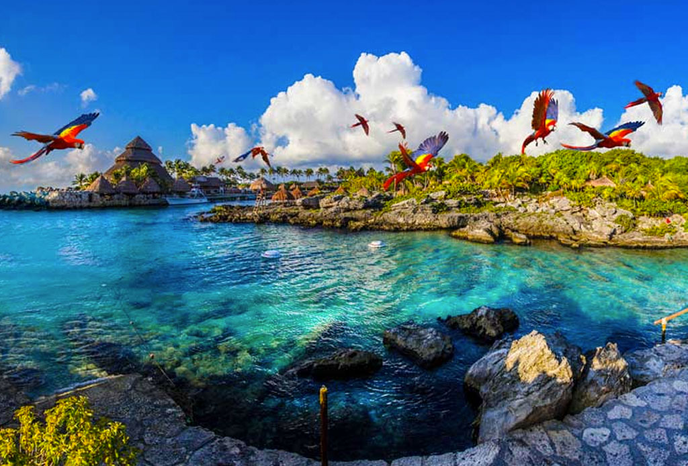
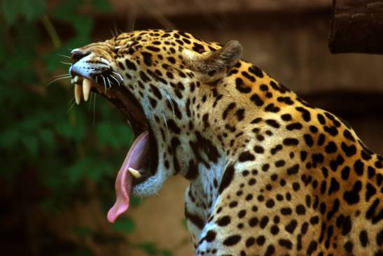
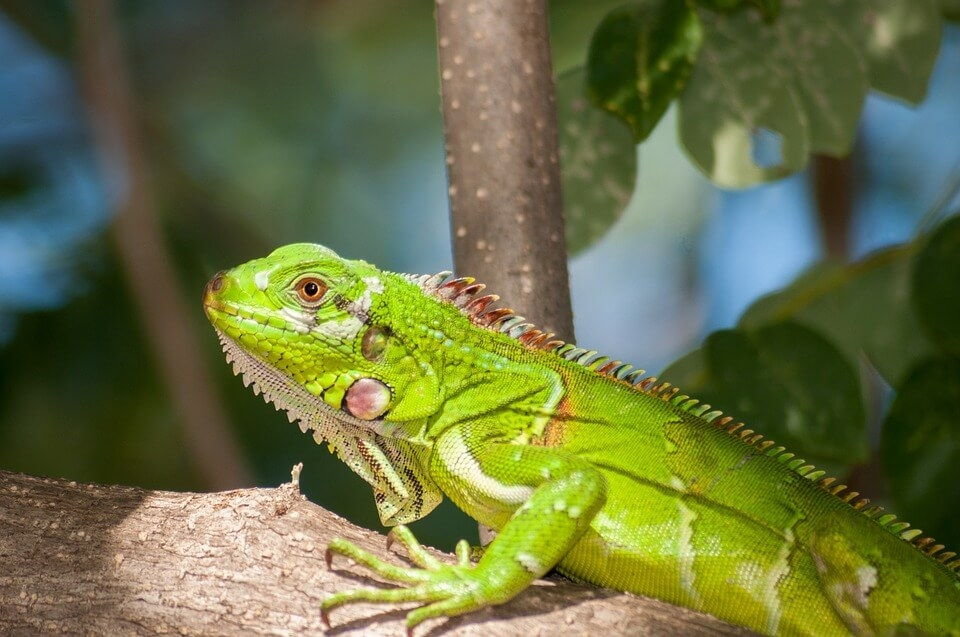
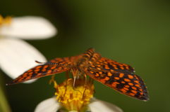
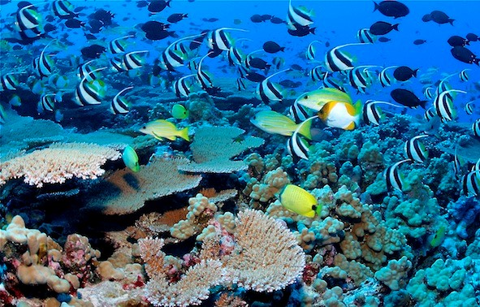
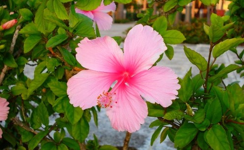

Hotel Caribeño
Un lugar inolvidable
Flora y fauna
 AVES
Entre las aves existe por supuesto una altísima variedad, aunque las más destacadas y que predominan los cielos y vegetación de la Riviera Maya son; flamenco, loro, pelícano, águila, fragata, tucán, gaviota, faisán, lechuza, buitre, guacamayo, cormorán, y varias especies de palomas.
MAMÍFEROS
No hay duda que la lista es muy amplia tanto de flora como de fauna, pero es interesante destacar entre los mamíferos; mono araña, mono aullador, oso hormiguero, murciélago, venado, ardilla, coatí, zorro, mapache, puma, jaguar y jabalí.
 REPTILES
En cuanto a los reptiles los más comunes y que se dejan ver en muchas ocasiones son; Iguana, tortuga, cocodrilo, caimán, geco, lagartija, y serpientes como la boa y la cascabel.
INSECTOS
Los insectos que predominan las selvas del caribe mexicano son infinidad, ya que el insecto es el ser vivo que más abunda en el planeta tierra y no es menos en esta zona. Pero no hay duda que los más comunes con los que puedes topar con facilidad son; luciérnaga, mariposa, mosca, mosquito, abeja, avispa. Añadiremos también los antrópodos como la tarántula, escorpión y alacrán.
 PECES
Su mar posee más de 600 especies de peces debido a la gran cantidad de corales que se encuentran en la Riviera Maya, siendo el segundo arrecife más grande del planeta después del de Australia. La fauna que predominan estos arrecifes son : barracuda, sargo, dorada, jurel, morena, pez aguja, pez cirujano, pez ángel, pez loro, pez león, langosta, centollo, mantarraya, tortuga, mero, y tiburón entre muchos otros.
VEGETACIÓN
Añadiendo a la lista la flora y vegetación, podemos observar que predomina; palma, caoba, cedro, mangle rojo, mangle negro, mangle blanco, e infinidad de plantas.
Sin duda alguna la zona de la Riviera Maya es rica en vida tanto terrestre, como acuática, siendo
una de las mayores atracciones del lugar donde poder observar nuestra maravillosa naturaleza en
su hábitat natural y poder tomar asombrosas fotografías.
¿Tienes preguntas o sugerencias? Envíanos un correo, sólo da click aquí.